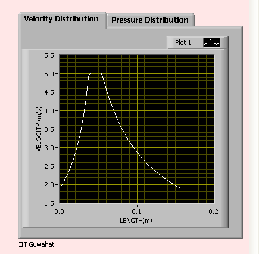
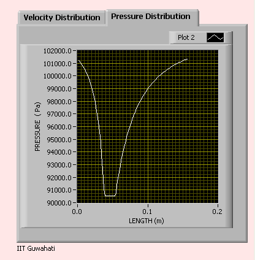

Experimental Procedure
- Place the apparatus on the hydraulic bench top.
- Connect the up-stream side of the unit to the bench supply valve with a length of plastic tube.
- Connect down-stream end of apparatus to a plastic tube, the free end of which is directed into the hydraulic bench for measuring discharge from venturi.
- Set both the apparatus flow control and bench supply valve to approximately one third their fully open positions. Before allowing water to flow through the apparatus check that the air purge valve on the upper manifold is tightly closed.
- Switch on the bench supply and allow water to flow.
- Close the apparatus flow control valve. Air will now be trapped in the upper parts of the manometer tubing and the manifold.
- Release the air purge valve sufficient to allow water to rise approximately half way up the manometer scale.
- Close the purge valve.
- Adjust both the bench supply and the apparatus control valves to obtain full flow. At this condition the maximum pressure difference between the venturi inlet and throat should be 240 millimeters.
- Observe the water levels for a few minutes to ensure the purge valve is scaling properly.
- Subsequent flow rates are now obtained by closing the apparatus control valve.
The rate of flow or discharge is measured by measuring water accumulation rate at the hydraulic bench. Readings can be taken either from minimum discharge to maximum discharge or from maximum discharge to minimum discharge.
Virtual Experimentation Procedure :
Front panel :Venturimeter INPUT PALETTE : Enter input parameters accordingly OUTPUT PALETTE : OUTPUT PALETTE shows Velocity vs Distance Graph and Pressure vs Distance Graph
![]()
.PNG)

